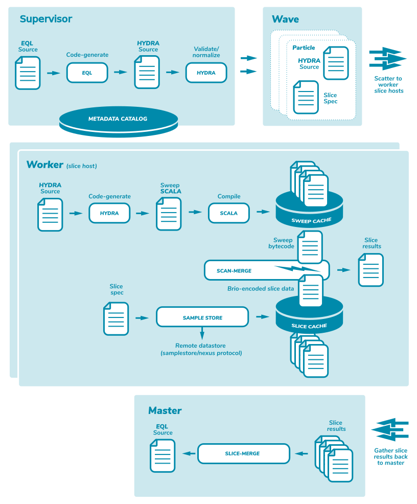

Paragraph
Burst Language Architecture
The Burst language pipeline is a quite deep topic and this architectural overview can not appropriately dive very deep into details. Here are a few high level concepts to take away.
Multi stage pipeline
Burst made a valuable early decision to separate the execution pipeline into multiple distinct language based processing steps.
EQL
The first step is occupied by a high-level SQL familiar language called EQL. The second step is a low level execution language called HYDRA. The EQL subsystem fields incoming external client analysis queries in the EQL language and generated corresponding HYDRA transcompilation as an output.
EQL example
select count(user.sessions.events) as eventFrequency,
user.sessions.events.id as eventId
beside select count(user.sessions) as sessions,
user.sessions.originMethodTypeId as originMethodType
from schema Unity
Hydra
The HYDRA subsystem takes incoming HYDRA language requests and generates SCALA transcompilation as an output. Finally the SCALA is compiled down to bytecode and the bytecode is used to implement high performance JIT warmed scan closures that execute the intended semantics of the incoming EQL construction.
hydra snippet
hydra myAnalysis (
// parameters (default values can overridden during calls)
param1:boolean = true,
param2:integer = 1,
param3:map[string, string] = map("hello" -> "goodbye" + param2, "red" → "blue"),
param4:set[double] = set(1.0 / param2, 2.3 * 10),
param5:string = null
) {
schema unity
val val1:long = 0
var val2:boolean = null // nulls ok!
// first query in analysis
frame myCube {
val val1:integer = 0
cube user {
limit = 300
aggregates {
agg1:sum[integer]
agg2:top[byte](30 + 1)
}
dimensions {
dim1:verbatim[long]
}
code generation
The ultimate goal of the language pipeline is to take a user-friendly SQL like analysis specification and to generate extremely fast bytecode that can execute a single pass scan on a large number of Brio Blob entities on all available cores/threads on a given Cell Worker.
generated code snippet
@inline final def apply(runtime:QuoTraveler_lexicon_runtime, sweep: org.burstsys.felt.model.sweep.FeltSweep): Unit = {
val reader = runtime.reader;
latticeVarInitialize(runtime);
val rootPathKey = brioSchema.rootNode.pathKey;
sweep.rootSplice(runtime, rootPathKey, 15); // TraverseCommencePlace
{ // BEGIN reference scalar tunnels for 'user'
runtime.lattice_user_channels_relation_isNull = true; // reset
runtime.lattice_user_project_relation_isNull = true; // reset
runtime.lattice_user_sessions_parameters_relation_isNull = true; // reset
runtime.lattice_user_sessions_events_parameters_relation_isNull = true; // reset
runtime.lattice_user_sessions_events_relation_isNull = true; // reset
runtime.lattice_user_sessions_relation_isNull = true; // reset
runtime.lattice_user_personas_relation_isNull = true; // reset
runtime.lattice_user_segments_relation_isNull = true; // reset
runtime.lattice_user_parameters_relation_isNull = true; // reset
runtime.lattice_user_relation.versionKey(reader) match {
case 1 => { // schema version 1
tunnel_v1_user_project(runtime, sweep, reader);
}
JIT warming
Because we are generating bytecode, we benefit from the extremely large number of executions of a given bytecode class, along with our use of off-heap memory intrinsics, to make the huge scale of simple memory access patterns involved almost as fast as machine code. This relies heavily on JIT compiler 'warming' characteristics.
caching
Because this process of taking EQL, generating Hydra, generating Scala, and generating bytecode is not for free, we cache the bytecode closures in order to make use of them again if we see the same analysis request. If one is executing completely ad-hoc analysis runs, then this caching does not add value, but if one is running the same query against different datasets, then this caching is highly valuable. The pipeline performance of a given analysis specification is quite fast even when first generated (and cached), but performance improves significantly.
parameterization
In order to broaden the number of queries that benefit from caching, EQL and Hydra introduce a feature called 'parameterization'. Any given query can have a set of named/typed parameters that are passed along with the EQL analysis specification and passed to Hydra. This means that a cached bytecode analysis can be re-used as long as only the parameter values have changed, not the structural semantics involved. This allows a broad range of 'report' style analytics where a number of queries can be run that differ only in moderate customizations.
analysis parallelism
Another signification optimization in the EQL/Hydra pipeline is that any given analysis specification can contain an unlimited number of parallel analytics. These are executed in parallel in the single pass scan operation thus lifting CPU pipelines and memory management performance. These multi-part analysis specifications, along with parameterization, allow the construction of highly useful complex 'reports' that are extremely high performance.
The pipeline runtime operations overview

The sequence of operations as depicted above are:
- SUPERVISOR:
- EQL source is received via the client library
- EQL parses the source and validates against the schema
- EQL generates HYDRA source
- HYDRA parses source and validates against the schema
- HYDRA normalizes the source
- EQL source is received via the client library
- NETWORK:
- Hydra and Slice specs are serialized/scattered to worker-nodes
- Hydra and Slice specs are serialized/scattered to worker-nodes
- WORKER:
- Hydra checks sweep cache for generated artifacts
- Hydra parses the normalized source
- Hydra generates a Scala Traveler for the schema if needed
- Hydra generates a Scala Sweep that analysis if needed
- Scala compiler creates byte code for Traveler and Sweep if needed
- Slice is loaded or fetched through the slice cache if needed
- Traveler and Sweep are used to scan all the regions in the slice
- Hydra checks sweep cache for generated artifacts
- NETWORK:
- all worker slice merge results are serialized and sent back to supervisor node
- all worker slice merge results are serialized and sent back to supervisor node
- SUPERVISOR:
- slice results from all workers are merged together
- final result is sent back via the client library
- slice results from all workers are merged together